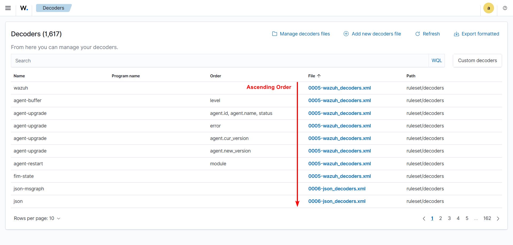
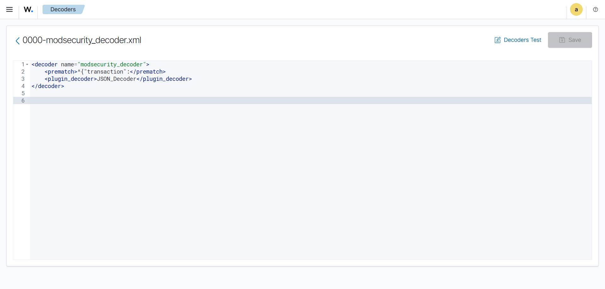
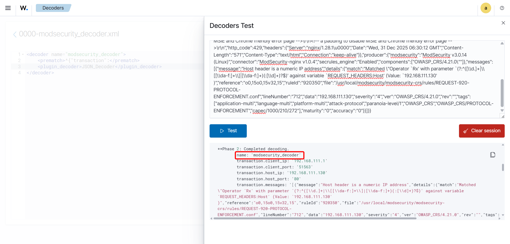

Understanding & Manipulating JSON Decoders - Wazuh
Before creating any custom decoder for JSON logs, it is crucial to understand how JSON Decoders actually work. We know that Wazuh already has its prebuilt JSON Decoder known as
0006-json_decoders.xml. Inside, if you inspect the decoder, the built-in generic json decoder has this prematch:

This matches any JSON starting with {", so it captures logs before our custom decoder can process them. Since ruleset decoders load before
custom decoders in /var/ossec/etc/decoders/, the generic decoder always wins. So basically what this means, no matter what decoder name we give, the prebuilt
JSON Decoder will override the custom JSON decoders’ name. For example, observe the image below:

To address this Decoder Name Override Problem from the root cause, we are going to look at two different approaches,
By using
<decoder_exclude>[decoder_name]</decoder_exclude>tag, to exclude the decoder that’s causing it.A naming convention that Wazuh uses to execute its decoder by ascending order.
Solution - 1: Using the decoder_exclude tag
To follow along with this approach, it is required to exclude the prebuilt 0006-json_decoders.xml decoder. Dont’t worry we are not fully excluding it.
Obviously, we care about the thing that come with the defaults. We are basically going to make it or represent it as not the inbuilt decoder itself.
Step - 1: Copy the content of
0006-json_decoders.xmland paste it inlocal_decoder.xmlStep - 2: Exclude
0006-json_decoders.xmldecoder from executing in the Wazuh Manager.
Save it, then restart the manager.
This method actually preserves the built-in features of 0006-json_decoders.xml decoder while also making it usable for customization purposes.
To further see it into action and how it works, checkout the Decoder Creation of ModSecurity JSON Logs, there the concept will be utilized for Detection Engineering.
Important
Order matters! Custom JSON Decoders must be defined BEFORE the generic json decoder. Other it won’t work as decoders are prioritized by order.
Solution - 2: The Naming Convention Approach
In this approach, we are going to follow a simple naming convention that Wazuh uses to execute its decoders by ascending order. This is only applicable if case scenarios like our, where we have multiple colliding decoder names overwriting each other.
First observe how Wazuh Decoders are actually named,
{kind=link}
Note that the decoder are named like 000[*]-[decoder_name], an usual ascending order approach.
If we name our decoders the same way, it will work just like the previous approach we have discussed earlier in Solution - 1: Using the decoder_exclude tag. The only difference is that,
we don’t have the need to use the decoder_exclude tag, here. In other words, it’s pretty much doing the same thing,
maintaining the name of the JSON Decoders in ascending order.
For example, if we consider the Decoder Creation of ModSecurity JSON Logs here as well,
instead of making the decoders in local_decoder.xml file, we would rather create a custom decoder file with the name 0000-modsecurity_decoder.xml and
make the decoder there.
Refer to the images in the slider to have a high level view,
 {kind=link}
{kind=link}
Notice that the test actually caught our decoder name without even using the use_own_name tag. This approach is much safer than the previous one, as we didn’t have to
alter any default configurations already set by Wazuh. And, this is also a more convenient approach.
Disclaimer
The above two solutions are best suited when you are dealing with multiple JSON logs emerging from multiple different entities. Such as, when you have to setup alerts for Suricata, Zeek and ModSecurity JSON logs, or any JSON logs coming from multiple entities at the same time within the same Wazuh Cluster.
While the use cases are endless, the above 2 solutions, although serving the same cause, might come in handy across various scenarios. It is suggested to find out what suits your scenario the best.
Credits
The solutions provided here are based on extensive community support and contributions from the Wazuh Community and Wazuh Ambassadors. These solutions have been developed through continuous technical discussions and convenient implementations provided by highly skilled individuals within the community.
Special acknowledgment to the following Wazuh Ambassadors who have contributed significantly to these solutions:
We deeply appreciate their dedication and expertise in helping develop and refine these JSON decoder manipulation techniques.